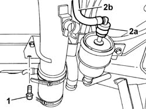
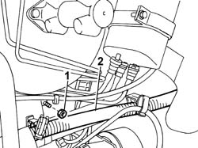
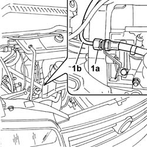

1040B32 FUEL FILLER PIPE UNION SLEEVE - R + R
- Path
- Procedures > 10 ENGINE UNIT > 1040 FUEL TANK AND PIPES > 1040B FUEL SUPPLY/RETURN CIRCUIT PIPE > 1040B32 FUEL FILLER PIPE UNION SLEEVE - R + R
- Kind
- repair procedure (removal / refitting; the operation number is the code)
- Applies to
- engines: 2.0 16V; all production periods
- Interactive page
- https://sloeber94.github.io/elrnDB-fDct/en/#/244000742
Applies to: engines: 2.0 16V; all production periods
 Removing
Removing
 Refitting
RefittingOp. 7055B54 UNDER-ENGINE GUARD - R R
1. Undo the lower bolt fixing the petrol tank filler.
2. Disconnect the rapid connector for the supply pipe on the fuel filter (2a) and release the pipe (2b) from the springs.

Applies to: engines: 2.0 16V; all production periods
- Lower the vehicle.
1. Undo the bolts fixing the upper filler.
2. Move the filler aside.

Applies to: engines: 2.0 16V; all production periods
1. Undo the connector connecting the supply pipe to the single manifold (1a) and remove the fuel supply pipe (1b).

Applies to: engines: 2.0 16V; all production periods
Refitting
Removing- Fit the fuel supply pipe.
- Tighten the connector connecting the supply pipe to the single manifold.
- Reposition the filler.
- Tighten the bolts fixing the upper filler.
- Raise the vehicle.
- Attach the pipe to the retaining springs.
- Connect the fuel supply pipe rapid connector to the fuel filter.
- Tighten the lower bolt fixing the petrol filler to the tank.